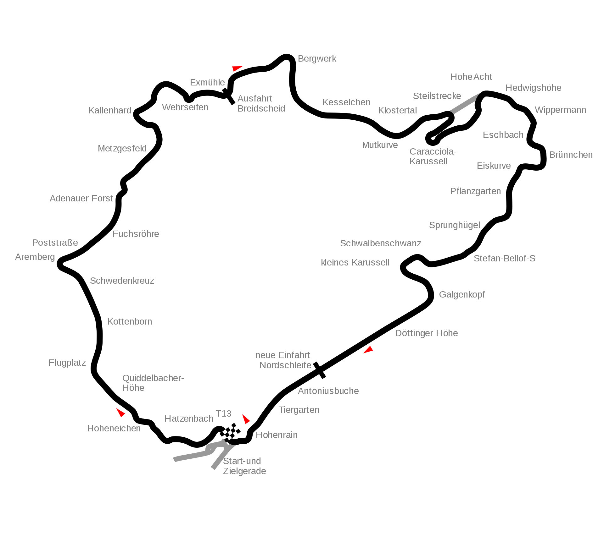

The Nordschleife:
The Nürburgring Nordschleife (North Loop) in Germany, with its remaining 20.8 km (12.9 mi) long old section dating from 1927, is used by various motoring media outlets and vehicle manufacturers for testing. Manufacturers publish times for promotional purposes while automotive media outlets usually publish times for comparison and reporting purposes. According to Car and Driver, Nürburgring Nordschleife "record-chasing runs are a universally accepted, objective measure of a cars performance, and shaving seconds gives automakers reasons to grab some headlines." Compared to the current version, the original Nürburgring track was longer and split into three configurations. The entire track, the Gesamtstrecke was 28.3 kilometres in length, composed of the Nordschleife (22.8 km), the Südschleife (7.7 km), and the Betonschleife – the latter a short 2 kilometer warm-up loop around the pit area.
